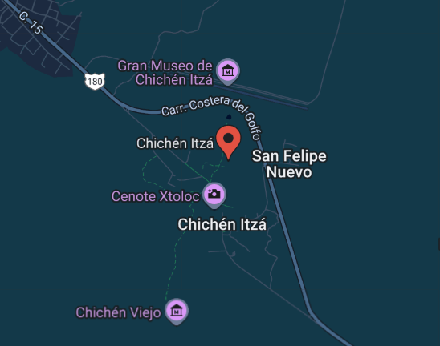

Chichen Itza

Chichén Itzá es una antigua ciudad maya situada en la península de Yucatán, México. Fundada alrededor del siglo VI d.C., fue un importante centro político, económico y religioso de la civilización maya. La ciudad es famosa por su arquitectura impresionante, que incluye la pirámide de Kukulkán (El Castillo), el Templo de los Guerreros y el Observatorio (El Caracol). Chichén Itzá refleja la avanzada comprensión astronómica y matemática de los mayas, así como su habilidad en la ingeniería y el arte. En 1988, fue declarada Patrimonio de la Humanidad por la UNESCO y es considerada una de las Nuevas Siete Maravillas del Mundo.
Ubicación |
Información Esencial
|